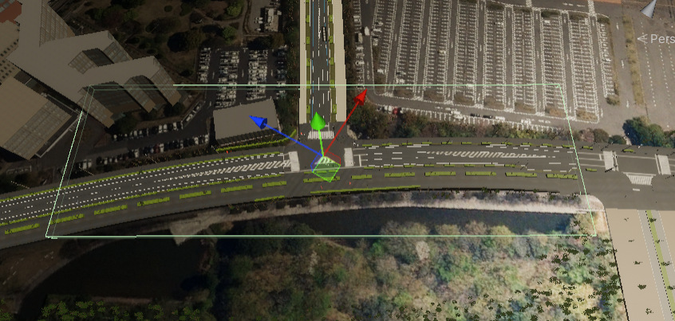
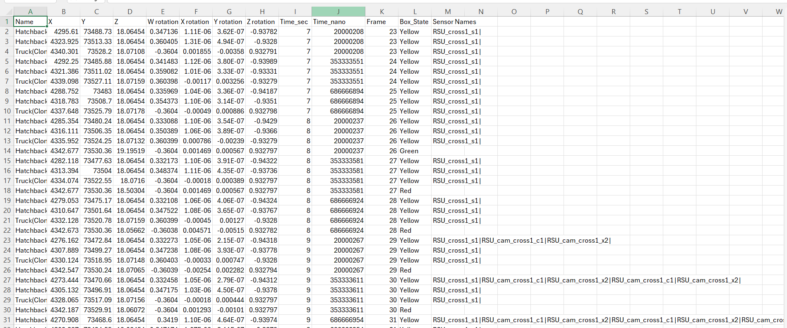
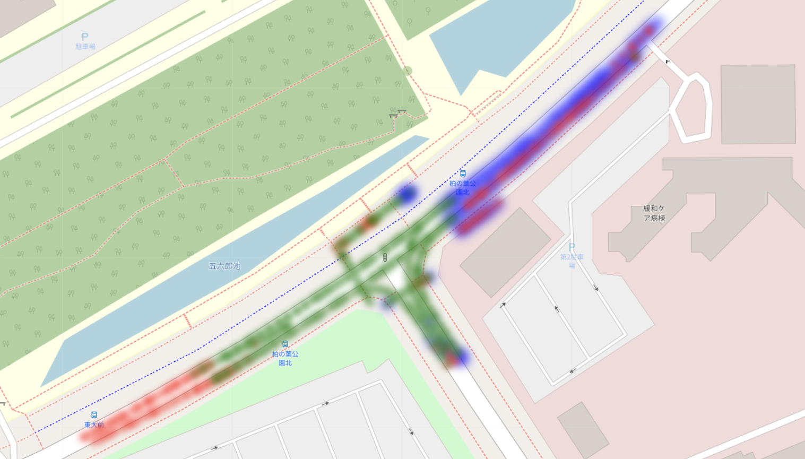
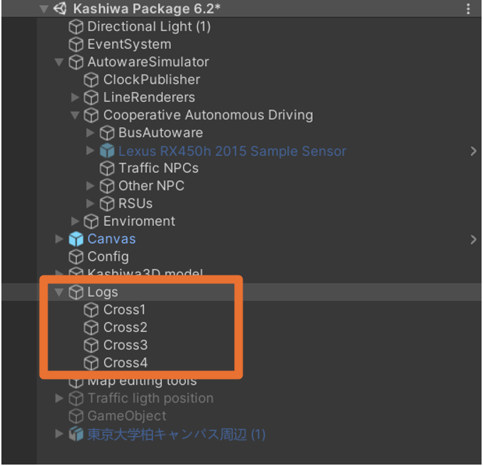
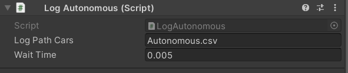
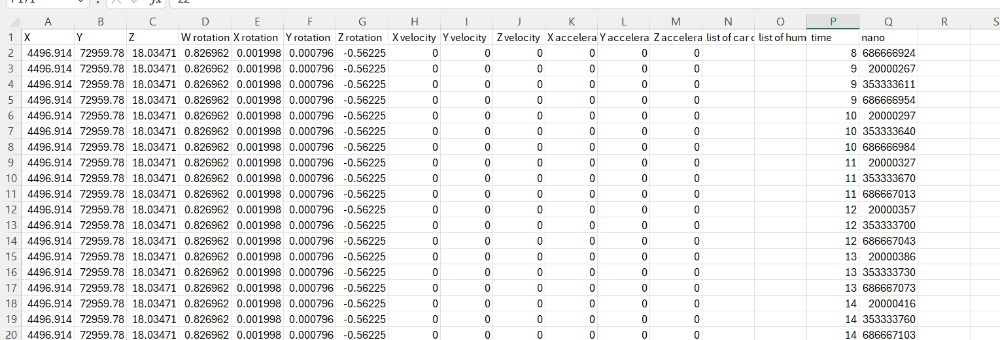

Logs System
The simulator has two complementary logging components. LogArea monitors all NPCs that pass through a defined trigger zone and writes their state to CSV files. LogAutonomous tracks the ego vehicle's own motion and collision events, and also records spawn selection data written by the Teleporter.
LogArea
What It Does
LogArea is a BoxCollider trigger that maintains live lists of vehicles and pedestrians currently inside it. Every few frames (or every few seconds), it writes a row per tracked NPC to separate CSV files for humans and cars.

The green box in the scene view marks the LogArea trigger volume.

Sample CSV output from LogArea.
Logging Modes
LogArea supports two timing modes, controlled by the ultraMode toggle:
| Mode | Toggle | Field | Description |
|---|---|---|---|
| Frame-based | ultraMode = true (default) |
waitForFrame |
Log every N frames (default: 2). High-frequency output, best for smooth data. |
| Time-based | ultraMode = false |
waitTime |
Log every N seconds (default: 0.05 s). Useful when frame rate varies. |
Logging starts after a short random delay (20–30 frames). Each sample writes one row per tracked object.
Detection Logic
LogArea uses OnTriggerEnter / OnTriggerExit to add and remove objects from its tracking lists:
| Object | Detected by | Tracked as | Requires |
|---|---|---|---|
| NPC vehicle | NPCVehicle component (in the collider's parents) |
car | checkCars |
| Pedestrian | NPCPedestrian or WaypointFollower component (in the collider's parents) |
human | checkHumans |
| Other vehicle (e.g. the ego bus) | Collider on a layer in vehicleLayer, with a Rigidbody in its hierarchy |
car | checkCars |
Destroyed objects are removed from the lists automatically at the next sample.
Sensor Column
The Sensor Names column contains the sensors that can currently observe the object, as reported by its LineOfSight component. Each entry has the form name*points* (sensor name and number of detected points), and entries are joined by |. The column is empty for objects without a LineOfSight component.

Color coding used in the companion heat-map tool:
- Green — NPC seen by the autonomous car
- Red — NPC not seen
- Blue — NPC detected by a roadside sensor

Typical placement of LogArea components in the scene.
Inspector Fields
| Field | Default | Description |
|---|---|---|
logPathHumans |
— | Base path of the human CSV (a timestamped file is created per run, see Output Files) |
logPathCars |
— | Base path of the vehicle CSV (timestamped per run) |
checkHumans |
true | Track pedestrians (NPCPedestrian / WaypointFollower) and create the human file |
checkCars |
true | Track NPCVehicles and vehicle-layer bodies and create the car file |
waitTime |
0.05 s | Log interval (time-based mode) |
waitForFrame |
2 | Log interval in frames (frame-based mode) |
ultraMode |
true | Use frame-based timing |
checkpointJumper |
— | CheckpointJumper (implements ILogIndex) whose current index is written to the Index column |
vehicleLayer |
— | Layer mask for detecting vehicles that are not NPCVehicles (e.g. the bus) |
CSV Column Reference — Cars and Humans
Both files have the same 20 columns; only the first header differs (Car ID in the car file, Human ID in the human file).
| # | Column | Description |
|---|---|---|
| 1 | Car ID / Human ID |
NPCVehicle.VehicleID for NPC vehicles; ScenarioHumanId for pedestrians (assigned on first log if missing). Empty for rows without either (e.g. the ego bus) |
| 2 | Name |
GameObject name |
| 3–5 | X, Y, Z |
Position in ROS coordinates plus the MGRS offset (m) |
| 6–9 | W rotation, X rotation, Y rotation, Z rotation |
Orientation as a ROS quaternion |
| 10–11 | Time_sec, Time_nano |
ROS simulation time (seconds, nanoseconds) |
| 12 | SystemTimeMs |
Host wall-clock time, UTC Unix milliseconds |
| 13 | Frame |
Unity frame count |
| 14 | Box_State |
LineOfSight box state; Unknown if the object has no LineOfSight |
| 15 | Sensor Names |
name*points* entries joined by | (see above) |
| 16 | Index |
Current index of checkpointJumper (ILogIndex); 0 if unset |
| 17–19 | X Speed, Y Speed, Z Speed |
transform.forward × speed (Unity world axes, not ROS) |
| 20 | Speed Amount |
Scalar speed from the object's ISpeed component (m/s); 0 if it has none |
Note
Numbers are always written with . as decimal separator, regardless of the system locale.
LogAutonomous
What It Does
LogAutonomous is attached directly to the ego vehicle. It continuously logs the vehicle's position, velocity, and acceleration, and records collision events. It also receives spawn selection data from the Teleporter after each teleport.

LogAutonomous component in the Inspector.

Sample CSV output from LogAutonomous.
Ego Vehicle State Log
Every waitTime seconds (default 0.005 s, i.e. effectively every frame) LogAutonomous appends one row:
| # | Column | Description |
|---|---|---|
| 1–3 | X, Y, Z |
Ego position in ROS coordinates plus the MGRS offset (m) |
| 4–7 | W rotation, X rotation, Y rotation, Z rotation |
Ego orientation as a ROS quaternion |
| 8–10 | X velocity, Y velocity, Z velocity |
Rigidbody linear velocity in the ROS frame (m/s); 0 if there is no Rigidbody |
| 11–13 | X acceleration, Y acceleration, Z acceleration |
Change of velocity since the previous row divided by the elapsed time, ROS frame (m/s²); 0 on the first row |
| 14 | list of car collisions |
Names of bodies in physical contact (OnCollisionEnter), joined by | |
| 15 | list of human collisions |
Names of bodies inside the ego's trigger colliders (OnTriggerEnter), joined by | |
| 16–17 | time, nano |
ROS simulation time (seconds, nanoseconds) |
| 18 | system_time_ms |
Host wall-clock time, UTC Unix milliseconds |
Both collision lists only consider colliders on the Vehicle layer (layer 6) and store the object owning the nearest Rigidbody. Entries are removed on OnCollisionExit / OnTriggerExit (not cleared every frame); an empty list is written as a single space.
Note
Some header names contain surrounding spaces (e.g. X velocity, time). Trim header names when parsing. Numbers are always written with . as decimal separator.
Spawn Selection Log
After each teleport, the Teleporter calls LogSpawnSelection() on the vehicle's LogAutonomous, which appends a row to a separate spawn-selection CSV file.
| Column | Description |
|---|---|
midpoint_segment |
Name of the target midpoint lane (None if not set) |
spawn_lane |
Lane chosen for the spawn (or RandomPoint) |
sample_index |
Index of the sampled point on the spawn lane |
distance_to_midpoint_m |
Path distance to the midpoint (m) |
estimated_time_s |
Kinematic ETA to midpoint (s) |
target_time_s |
Randomly drawn target arrival time (s) |
reached_cruise |
1 if cruise speed is reached before the midpoint, else 0 |
target_x, target_y, target_z |
Teleport destination in ROS map coordinates (ROS + MGRS offset, same frame as the ego log) |
ros_time_sec, ros_time_nsec |
ROS simulation time of the teleport |
This log is the primary tool for verifying that the Teleporter is placing the vehicle at the intended arrival times.
Inspector Fields
| Field | Default | Description |
|---|---|---|
logPathCars |
— | Base path of the ego state CSV |
spawnSelectionLogPath |
AutonomousSpawnValidation.csv |
Base path of the spawn selection CSV |
logFilePrefix |
Auto |
Prefix added to both file names (empty = no prefix) |
waitTime |
0.005 s | Interval between ego state rows |
Output Files
Each run creates new timestamped files; nothing is appended to files from earlier runs. The timestamp is the local start time of the component.
| Component | Field | Resulting file |
|---|---|---|
| LogArea | logPathHumans, logPathCars |
<dir>/<basename>_yyyyMMdd_HHmmss<ext> |
| LogAutonomous | logPathCars |
<dir>/<logFilePrefix>_<basename>_yyyyMMdd_HHmmss<ext> |
| LogAutonomous | spawnSelectionLogPath |
<dir>/<logFilePrefix>_<basename>_yyyyMMdd_HHmmss<ext> |
<ext>defaults to.csvif the base path has no extension. An empty base path disables that file.- The output directory is created automatically.
- Relative paths are resolved against the process working directory: the project root in the Editor, the launch directory for a player build.
- LogAutonomous logs a warning on write errors and keeps logging.
Note
SimulationOutput/ is not git-ignored. Keep log output out of commits manually (or write it outside the repository).
Changes / Migration
Analysis scripts written for older versions need updating:
- LogArea columns shifted: a leading
Car ID/Human IDcolumn and aSystemTimeMscolumn (afterTime_nano) were added. Select columns by header name rather than position. - One file per run: LogArea and LogAutonomous no longer append to a fixed path; each run writes new
_yyyyMMdd_HHmmssfiles (LogAutonomous files also get thelogFilePrefix). Read the newest file or glob all runs. - LogAutonomous acceleration is now the real acceleration (m/s²); previously the acceleration columns duplicated the velocity.
- NPCPedestrian humans are now logged by LogArea (previously only
WaypointFollowerhumans). - LogAutonomous gained a trailing
system_time_mscolumn and the spawn-selection log. - Numbers are written locale-independently (
.decimal separator).